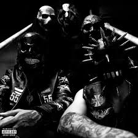

Homixide Gang — американский хип-хоп-дуэт из Атланты, состоящий из Homixide Beno! и Homixide Meechie, подписанный на лейбл Playboi Carti «Opium». Они известны своим энергичным трэп-звучанием с агрессивными басовыми линиями и экспериментальными элементами.

«Homixide Lifestyle» — это знаковый альбом и репрезентация агрессивного стиля атлантского хип-хоп дуэта Homixide Gang (Beno! и Meechie), подписантов лейбла Playboi Carti «Opium». Проект отличается ядовитыми рейдж-битами, мощными басами и энергичной подачей, формируя мрачную эстетику уличной жизни.

«Snot Or Not» — это агрессивный альбом от дуэта Homixide Gang, выпущенный в 2023 году, который отличается мрачным звучанием и быстрой читкой участников. Пластинка предлагает энергичную смесь трэпа с дикими эдлибами, направленную на продвижение стиля лейбла «Opium»

«i5u5we5» — это взрывной альбом 2024 года от атлантского дуэта Homixide Gang, состоящий из 14 ядовитых рэйдж-бэнгеров. Релиз продолжает фирменное агрессивное звучание артистов лейбла Opium, предлагая мрачные и энергичные треки
Listen